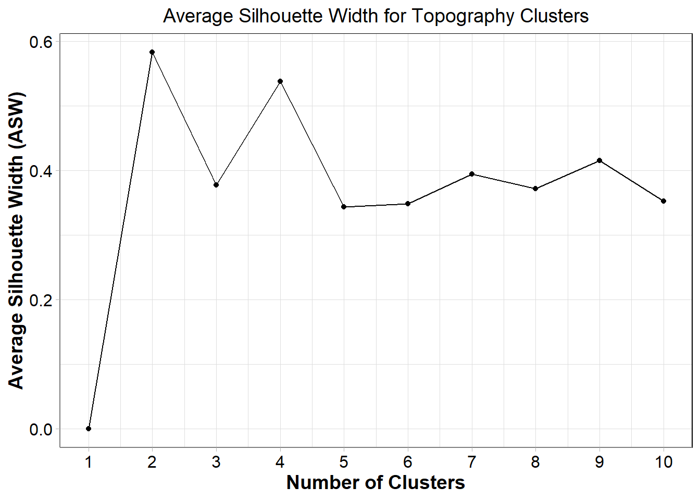
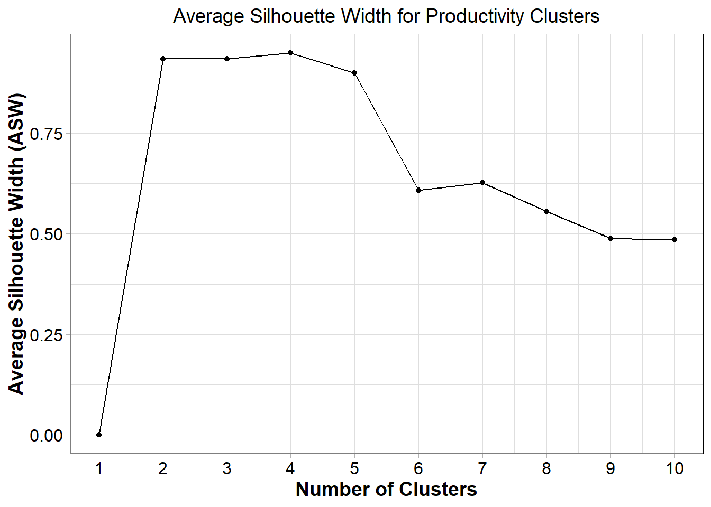

library(fpc)
library(raster)
library(tidyverse)
library(terra)
wd<-getwd()
raw_input_layers_folder<-paste0(wd, "/InputLayers/Unprocessed")
clust_input_layers_folder<-paste0(wd, "/InputLayers")
output_layers_folder<-paste0(wd, "/OutputLayers")
results_folder<-paste0(wd, "/Results")
my_plot_theme <- function(...){
ggplot2::theme_light()+
ggplot2::theme(axis.line = ggplot2::element_line(colour = "grey50"),
axis.title.y = ggplot2::element_text(face="bold", angle=90),
axis.title.x = ggplot2::element_text(face="bold"),
panel.border = element_rect(colour = "black", fill=NA, linewidth=1),
plot.title = ggplot2::element_text(size=14,hjust=0.5),
legend.text.align = 0.5,
legend.title.align = 0,
axis.title = ggplot2::element_text(size=14,vjust=0.5),
axis.text.x = ggplot2::element_text(size = 12,
colour = "black"),
axis.text.y = ggplot2::element_text(colour = "black",
size = 12),
...)
}A guide to developing non-hierarchical habitat classifications using open-source data and software: Clustering the input layers
Prepare your working environment
In the event that you’ve closed your R & have lost the objects in the environment since running step 1, read in your rasters.
slo<-raster(paste0(raw_input_layers_folder, "/GEBCO2020_GoG_Slo_10km_WGS84.tif"))
bbpi<-raster(paste0(raw_input_layers_folder, "/GEBCO2020_GoG_BBPI_10km_WGS84.tif"))
fbpi<-raster(paste0(raw_input_layers_folder, "/GEBCO2020_GoG_FBPI_10km_WGS84.tif"))
prod<-raster(paste0(raw_input_layers_folder, "/Yool_GoG_POC_10km_WGS84.tif"))
temp<-raster(paste0(raw_input_layers_folder, "/BO_GoG_Temp_10km_WGS84.tif"))
sal<-raster(paste0(raw_input_layers_folder, "/BO_GoG_Sal_10km_WGS84.tif"))Topography
In the absence of a substrate layer for the region of interest, we will use topography (see step 1 document for rationale). To create our topography layer, we cluster together our three variables (slope, FBPI and BBPI).
1. Trialling iterative clustering options
input_type<-"Topography" # change based on whatever variable/group you're clustering a. Normalising the data
For many clustering algorithms, data should first be normalized to between 0 and 1. As with any spatial task, the time taken for the code below to run depends on the extent of your region of interest.
# slo
mean1<-(cellStats(slo, stat='mean'))
stdev1<-(cellStats(slo, stat='sd'))
norm1<-((slo-mean1)/(stdev1))
min1<-(cellStats(norm1, stat='min'))
max1<-(cellStats(norm1, stat='max'))
cor1<-((norm1-min1)/(max1-min1))
# bbpi
mean2<-(cellStats(bbpi, stat='mean'))
stdev2<-(cellStats(bbpi, stat='sd'))
norm2<-((bbpi-mean2)/(stdev2))
min2<-(cellStats(norm2, stat='min'))
max2<-(cellStats(norm2, stat='max'))
cor2<- ((norm2-min2)/(max2-min2))
# bbpi
mean3<-(cellStats(fbpi, stat='mean'))
stdev3<-(cellStats(fbpi, stat='sd'))
norm3<-((fbpi-mean3)/(stdev3))
min3<-(cellStats(norm3, stat='min'))
max3<-(cellStats(norm3, stat='max'))
cor3<- ((norm3-min3)/(max3-min3))
# combine dfs
DF1<-data.frame(rasterToPoints(cor1))%>%
rename(slope=3) # change based on whatever variable/group you're clustering
DF2<-data.frame (rasterToPoints(cor2))%>%
rename(bbpi=3) # change based on whatever variable/group you're clustering
DF3<-data.frame (rasterToPoints(cor3))%>%
rename(fbpi=3) # change based on whatever variable/group you're clustering
DF<-DF1%>%
full_join(DF2, by=c("x","y"))%>%
full_join(DF3, by=c("x","y"))%>%
drop_na()%>%
dplyr::select(bbpi, fbpi, slope)b. Selecting the optimal number of clusters
For ecological data analysis, various clustering algorithms play a pivotal role in uncovering meaningful patterns and structures within complex environmental datasets. One widely employed method is hierarchical clustering, which organizes data into a tree-like structure, facilitating the identification of nested ecological communities. K-means clustering is another popular approach, segregating data into distinct groups based on similarity, making it useful for delineating ecological zones or habitats. Density-based clustering algorithms like DBSCAN excel in identifying regions of high data density, making them valuable for uncovering spatially concentrated ecological phenomena. Fuzzy clustering methods, such as Fuzzy C-means, offer a nuanced perspective by assigning degrees of membership to data points, reflecting the fuzzy boundaries inherent in ecological communities. Additionally, model-based clustering techniques like Gaussian Mixture Models are adept at capturing the probabilistic nature of ecological data, accommodating variations and uncertainties. Each clustering algorithm brings a unique set of strengths to ecological analysis.
The code below runs the pamk() function - ‘Partitioning Around Medoids with Estimation of Number of Clusters’ - that performs a partitioning around medoids clustering with the number of clusters estimated by optimum average silhouette width or Calinski-Harabasz index. It iteratively clusters the data, changing the number of clusters the data is separated into each time between a specific range (here, 1 to 10).
The metric we’ve used for cluster validation is average silhouette width (ASW). It provides a measure of how similar an object is to its own cluster (cohesion) compared to other clusters (separation). This metric helps to evaluate how well-defined and distinct the clusters are in your data. The closer to 1, the more stable the clusters.
krange<-1:10
clara <- pamk(DF,krange=krange,criterion="asw", usepam=FALSE, # change depending on how many iterations you want to run
scaling=FALSE, diss=inherits(DF, "Euclidean"),
critout=TRUE)1 clusters 0
2 clusters 0.5831037
3 clusters 0.3771832
4 clusters 0.5374973
5 clusters 0.3435645
6 clusters 0.348205
7 clusters 0.3940232
8 clusters 0.3718437
9 clusters 0.4156864
10 clusters 0.3524049 The pamk() function creates a list which isn’t overly helpful. However, we can extract the important bits and interpret it more easily.
asw<-as.data.frame(clara$crit)
noclusters <- as.data.frame(as.numeric(c(krange))) # change depending on how many iterations you ran
results<-cbind(noclusters, asw)%>%
rename(No_of_clusters=1,
ASW=2)These are important results so let’s save them in a CSV file in case you want to refer back to them. This is particularly useful when testing high numbers of clusters given the time involved.
write.csv(results, paste0(results_folder, "/asw_scores_", input_type, ".csv"), row.names = FALSE)Visualizing the results is a great way to quickly ascertain how well the data clusters.
plot<-ggplot(data=results, aes(x=No_of_clusters, y=ASW, group=1)) +
geom_line() +
geom_point() +
scale_x_continuous(breaks=seq(min(krange),max(krange), 1)) +
ggtitle(paste0("Average Silhouette Width for ", input_type, " Clusters"))+
my_plot_theme()+
xlab("Number of Clusters")+
ylab("Average Silhouette Width (ASW)")
plot
We’ll also save this plot at a high DPI in case you wan to use it in the future.
2. Running your selected cluster combination
This is where you bring in expert opinion and consider the number of clusters you expect to have. For varying statistical reasons, 2 clusters often scores far higher than any other combination when assessing the cluster structure using ASW. However, there are reasonably few variables where 2 classes would appropriately capture biologically relevant variation.
For our topography data, if we exclude 2 clusters, the next best clustering structure is with 4 clusters for our topography layer.
no_of_clusters<-4Now we run cluster the data but this time, we only run it on the selected number of clusters, not iteratively.
clara<-pamk(DF,krange=no_of_clusters,criterion="asw", usepam=FALSE,
scaling=FALSE, diss=inherits(DF, "Euclidean"),
critout=TRUE)4 clusters 0.5374973 And then convert it into a raster. This step can take a while depending on the extent of your region of interest.
clara_df <- data.frame(DF1$x, DF1$y, clara$pamobject$clustering)%>%
rename("x"="DF1.x",
"y"="DF1.y",
"cluster"="clara.pamobject.clustering")
coordinates(clara_df)<-~x+y
clara_Ras<-terra::rasterize(clara_df, slo) # the reason slo is referenced here is it's a raster of the same extent and resolution of the one we want to create so it's just used as a template - you could use any of your rasters as this templatetopo<-clara_Ras[[2]]
plot(topo, main="Clustered Topography")This is our clustered input layer for topography so let’s save it.
terra::writeRaster(topo, filename=(paste0(clust_input_layers_folder, "/", input_type, "_", no_of_clusters, "clusters_10km_WGS84.tif")), overwrite=TRUE, format="GTiff")Now we can move onto the next input variable…
Productivity
1. Trialling iterative clustering options
input_type<-"Productivity" # change based on whatever variable/group you're clustering a. Normalising the data
# prod
mean1<-(cellStats(prod, stat='mean'))
stdev1<-(cellStats(prod, stat='sd'))
norm1<-((prod-mean1)/(stdev1))
min1<-(cellStats(norm1, stat='min'))
max1<-(cellStats(norm1, stat='max'))
cor1<-((norm1-min1)/(max1-min1))
# combine dfs
DF1<-data.frame(rasterToPoints(cor1))%>%
rename(productivity=3) # change based on whatever variable/group you're clustering
DF<-data.frame(DF1$productivity)b. Running & assessing the pamk() function
krange<-1:10
clara <- pamk(DF,krange=krange,criterion="asw", usepam=FALSE, # change depending on how many iterations you want to run
scaling=FALSE, diss=inherits(DF, "Euclidean"),
critout=TRUE)1 clusters 0
2 clusters 0.9344072
3 clusters 0.9341473
4 clusters 0.9493195
5 clusters 0.8989986
6 clusters 0.6083657
7 clusters 0.626699
8 clusters 0.5557556
9 clusters 0.4882519
10 clusters 0.4851403 asw<-as.data.frame(clara$crit)
noclusters <- as.data.frame(as.numeric(c(krange))) # change depending on how many iterations you ran
results<-cbind(noclusters, asw)%>%
rename(No_of_clusters=1,
ASW=2)write.csv(results, paste0(results_folder, "/asw_scores_", input_type, ".csv"), row.names = FALSE)plot<-ggplot(data=results, aes(x=No_of_clusters, y=ASW, group=1)) +
geom_line() +
geom_point() +
scale_x_continuous(breaks=seq(min(krange),max(krange), 1)) +
ggtitle(paste0("Average Silhouette Width for ", input_type, " Clusters"))+
my_plot_theme()+
xlab("Number of Clusters")+
ylab("Average Silhouette Width (ASW)")
plot
2. Running your selected cluster combination
For productivity, 4 clusters is the best-scoring solution.
no_of_clusters<-4clara<-pamk(DF,krange=no_of_clusters,criterion="asw", usepam=FALSE,
scaling=FALSE, diss=inherits(DF, "Euclidean"),
critout=TRUE)4 clusters 0.9493195 clara_df <- data.frame(DF1$x, DF1$y, clara$pamobject$clustering)%>%
rename("x"="DF1.x",
"y"="DF1.y",
"cluster"="clara.pamobject.clustering")
coordinates(clara_df)<-~x+y
clara_Ras<-terra::rasterize(clara_df, slo) # the reason slo is referenced here is it's a raster of the same extent and resolution of the one we want to create so it's just used as a template - you could use any of your rasters as this templateprod<-clara_Ras[[2]]
plot(prod, main="Clustered Productivity")terra::writeRaster(prod, filename=(paste0(clust_input_layers_folder, "/", input_type, "_", no_of_clusters, "clusters_10km_WGS84.tif")), overwrite=TRUE, format="GTiff")Water mass structure
1. Trialling iterative clustering options
input_type<-"WaterMassStructure" # change based on whatever variable/group you're clustering a. Normalising the data
# temp
mean1<-(cellStats(temp, stat='mean'))
stdev1<-(cellStats(temp, stat='sd'))
norm1<-((temp-mean1)/(stdev1))
min1<-(cellStats(norm1, stat='min'))
max1<-(cellStats(norm1, stat='max'))
cor1<-((norm1-min1)/(max1-min1))
# sal
mean2<-(cellStats(sal, stat='mean'))
stdev2<-(cellStats(sal, stat='sd'))
norm2<-((sal-mean2)/(stdev2))
min2<-(cellStats(norm2, stat='min'))
max2<-(cellStats(norm2, stat='max'))
cor2<- ((norm2-min2)/(max2-min2))
# combine dfs
DF1<-data.frame(rasterToPoints(cor1))%>%
rename(temperature=3) # change based on whatever variable/group you're clustering
DF2<-data.frame (rasterToPoints(cor2))%>%
rename(salinity=3) # change based on whatever variable/group you're clustering
DF<-DF1%>%
full_join(DF2, by=c("x","y"))%>%
drop_na()%>%
dplyr::select(temperature, salinity)b. Running & assessing the pamk() function
krange<-1:10
clara <- pamk(DF,krange=krange,criterion="asw", usepam=FALSE, # change depending on how many iterations you want to run
scaling=FALSE, diss=inherits(DF, "Euclidean"),
critout=TRUE)1 clusters 0
2 clusters 0.9074466
3 clusters 0.896966
4 clusters 0.8838692
5 clusters 0.782507
6 clusters 0.7852765
7 clusters 0.7046758
8 clusters 0.6864895
9 clusters 0.7648821
10 clusters 0.6254593 asw<-as.data.frame(clara$crit)
noclusters <- as.data.frame(as.numeric(c(krange))) # change depending on how many iterations you ran
results<-cbind(noclusters, asw)%>%
rename(No_of_clusters=1,
ASW=2)write.csv(results, paste0(results_folder, "/asw_scores_", input_type, ".csv"), row.names = FALSE)plot<-ggplot(data=results, aes(x=No_of_clusters, y=ASW, group=1)) +
geom_line() +
geom_point() +
scale_x_continuous(breaks=seq(min(krange),max(krange), 1)) +
ggtitle(paste0("Average Silhouette Width for ", input_type, " Clusters"))+
my_plot_theme()+
xlab("Number of Clusters")+
ylab("Average Silhouette Width (ASW)")
plot2. Running your selected cluster combination
Arguably, water mass structure is the variable requiring the most expert knowledge to validate your cluster choice. Clustering into 2, 3 and 4 groups all result is strong ASW scores. Our region of interest in this examples is the Gulf of Guinea. Recent literature suggests 3 bottom water masses in the region so this is the value we’ll use going forward.
no_of_clusters<-3clara<-pamk(DF,krange=no_of_clusters,criterion="asw", usepam=FALSE,
scaling=FALSE, diss=inherits(DF, "Euclidean"),
critout=TRUE)3 clusters 0.896966 clara_df <- data.frame(DF1$x, DF1$y, clara$pamobject$clustering)%>%
rename("x"="DF1.x",
"y"="DF1.y",
"cluster"="clara.pamobject.clustering")
coordinates(clara_df)<-~x+y
clara_Ras<-terra::rasterize(clara_df, slo) # the reason slo is referenced here is it's a raster of the same extent and resolution of the one we want to create so it's just used as a template - you could use any of your rasters as this templatewms<-clara_Ras[[2]]
plot(wms, main="Clustered Water Mass Structure")terra::writeRaster(wms, filename=(paste0(clust_input_layers_folder, "/", input_type, "_", no_of_clusters, "clusters_10km_WGS84.tif")), overwrite=TRUE, format="GTiff")